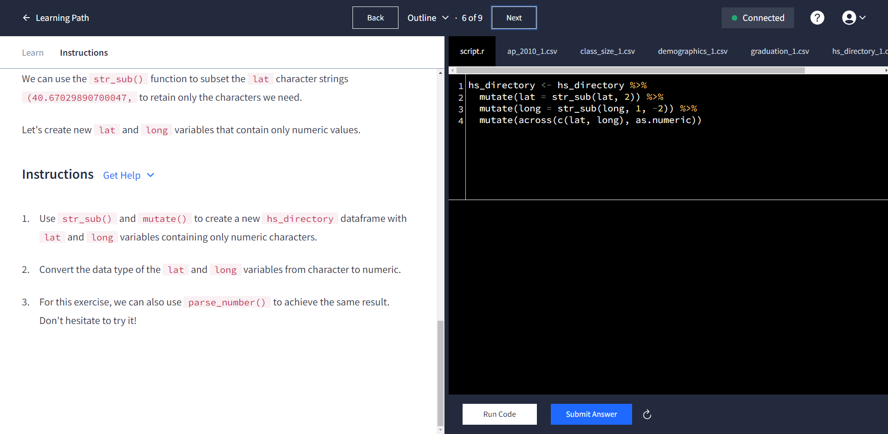
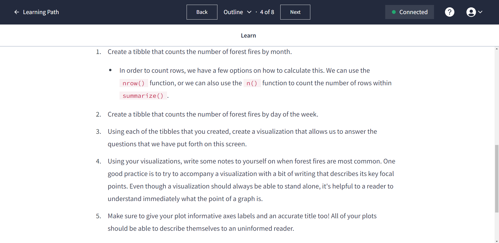

| dataquest.io |
Overview
I’m taking a quick break from the usual “weird tales from probability, statistics, and data” oeuvre of this blog. For this post, I’d like to write about something else that’s near and dear to my both my heart and my daily schedule: teaching an Introduction to Data Science and Analytics course.
This course (DSA-101 for short) is the foundational, introductory-level course for the new Data Science and Data Analytics programs we have launched this year at Baldwin Wallace University. In lieu of a textbook, I decided to adopt Dataquest for use in our class.
Here’s where I should put a disclosure – or, rather, a lack thereof. I am not affiliated with Dataquest; I am not paid by Dataquest in any capacity, particularly including for using their platform in my class. Nobody at Dataquest has solicited this post in any fashion from me. I’m writing about this because, simply put, Dataquest is a well-made product and I believe in it.
More practically, I’m writing this post with some actionable tips for anyone who would like to try using Dataquest in a structured classroom environment. This entire class was an experiment for me; some things worked well, some were total flops, and some were in between. I’m hoping that by documenting my experience here, I might be able to provide a roadmap for anyone else who would like to try this… including myself, when I teach another section of this class in the upcoming Spring semester.
What is Dataquest?
Dataquest is a collection of online courses covering data topics. Many similar products exist, but what makes Dataquest special is its blend of structured lessons and open-ended projects. Moreover, it has clearly been assembled by instructors who understand education and the crucial role of nontrivial active learning. It is challenging, but also supportive; it asks much of learners, but it provides enough scaffolding for them to get there.
I am a huge fan of Dataquest, and these defining features are why:
- The program doesn’t take educational shortcuts. Learners write code on a blank prompt instead of filling in blanks or modifying existing code. Exercises ask students to think, not to trivially adjust things they’ve already seen. Descriptions are given in text and graphics, not in videos that make the learner feel good while subconsciously zoning out. Completing the lessons doesn’t feel like following instructions; it feels more like solving problems.
- Projects invite meaningful creativity. The projects interspersed throughout the curriculum are open-ended and challenging. These projects embrace the idea that there are multiple correct ways to solve problems, and that different people may arrive at different conclusions. A student from my previous semester described one of these projects as “hard, but in a good way.”
- It’s fun. When I was preparing the DSA-101 course, I decided to complete the R tidyverse modules on my own first so that I deeply understood what I was asking my students to do. This was much more fun than I expected, and I learned a lot while completing it. Even though I’ll still be using the R content for the DSA-101 class this semester, I’ve decided to learn some Python on the side, just because I can. I think most learning is intrinsically fun, and Dataquest does a wonderful job of enabling the fun to naturally occur.
The Dataquest Academic Program provides a way for instructors to use the Dataquest platform in their classes at no charge. I kept waiting all semester to see what the catch would be, and… it just never came. We were generously granted Dataquest use for the entire semester, for free. Given that I was using it like a textbook, and functionally in place of a textbook, my students were pretty excited about this.

Using Dataquest in DSA-101
Since our DSA-101 course serves as the cornerstone of our new data majors, I had some design considerations as I constructed the course. Dataquest includes robust coverage of both the R and Python programming languages; I opted to use R because my university’s data programs already required multiple other Python-based courses from our Computer Science department, but did not already have any coverage of R’s tidyverse.
Students entered the course with a wide variety of backgrounds; some students were senior-level Computer Science majors looking to add some data skills, and others had no programming experience at all. Since most of the veteran coders’ experience was in Python or Java, using R leveled the playing field somewhat and made it easier for all students to relate to one another as learners.
The typical class experience was similar to a “flipped” class. During our class time, students worked on their own to complete Dataquest modules that extended to homework on an as-needed basis. Students also spent significant time working in groups on formative group quizzes meant to foster discussion.
What worked well
Here are the things about the course that I would do again and would recommend for any other instructors who are thinking about using the Dataquest Academic Program:
- A customized content path: None of the existing career paths in Dataquest quite fit what I was hoping to do in the class, so I carefully curated a list of the modules that I asked my students to complete.
- Staying focused on deliverables: As I chose the modules used in my class, I kept my attention on what I wanted them to be able to make. My first goal was for them to use
ggplot2to construct some very basic graphs; we were able to achieve this goal in just over four weeks. Once we got there, data visualization suddenly became a tool that we could use to discuss broader data concepts. Being able to create things helped give the course a feel of relevance. - Balancing autonomy against a common pace: The veteran coders still had an obvious advantage in speed when picking up the R content. Allowing students to work on their own during class, and having homework naturally arise as spillover content for what they were not able to complete, mostly worked quite well to balance the different learning speeds.

What could have gone better
Here are the biggest areas where my use of Dataquest fell short of what I want to do as an instructor:
- Fostering conversation and community: When students were working on Dataquest content, the room was too quiet! I encouraged them to talk to each other and work together, but mostly they wanted to work independently. We eventually settled on playing music during Dataquest sessions, which helped – but next semester I’ll also place a greater emphasis on group work outside Dataquest to get them talking and sharing ideas.
- Gaps in course content relative to my goals: There were a few topics that I was hoping to cover in the course for which I didn’t find suitable Dataquest coverage. In some cases, the content didn’t exist; in others, it was too long for me to use in the 15-week course. As such, I had to develop some content on my own outside the Dataquest platform, which didn’t go as well as I would have liked.
- Built-in Dataquest projects as assessment: The Dataquest projects are very, very good; however, I did not find them to work well for the graded assessments. The biggest issue was that the availability of the solution notebooks implicitly invited students to examine solutions and deprive themselves of chances to think. This isn’t a problem with the Dataquest platform, but rather with the concept of grading, which naturally twists incentives from learning to getting high scores. Next semester, I’ll write new original projects to nudge students away from this behavior.
Other tips and tricks
Some pieces of advice I would have for any instructors using the Dataquest Academic Program:
- Before you ask a class to complete something, go through it yourself first. This seems like an obvious teaching tip, but it’s worth reiterating here; I was tempted to skip some modules I wanted to assign to my students on basic R things that I knew well. However, completing the modules on my own first allowed me to deeply understand what my students would have seen and to predict places where they would struggle. This also put into clearer focus which modules were worth our limited class time.
- Supplement Dataquest content with structured questions. After most lessons, I gave my class something called “zero-stakes quizzes” that were designed to give them something to work on together outside the Dataquest content. This allowed me to both reinforce the skills conveyed in Dataquest and to push them a bit further on things that weren’t covered by the modules; it also got them talking to each other, which helped improve the feel of the class.
Conclusion
I really can’t say enough good things about Dataquest and my experience using it in my class. Whether you’re someone looking to learn some data and programming concepts, or you’re an instructor looking to provide some structured assistance for students, Dataquest is worth checking out. (There’s a free trial available if you want to give it a shot!)